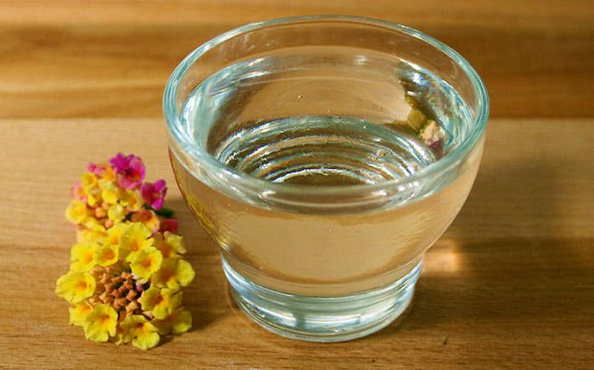
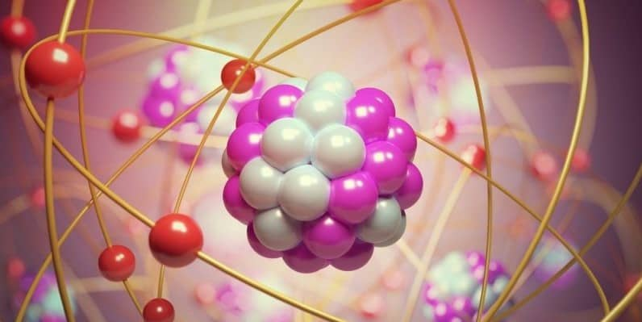

Propiedades físicas de la glicerina: |
||
-Es un líquido incoloro, inodoro, de baja toxicidad ambiental, soluble en agua y otros disolventes polares, insoluble en hidrocarburos, hidrocarburos clorinados y éteres, no se considera un líquido volátil. |
 | |
Propiedades químicas de la glicerina: |
||
|  |
-Es un compuesto orgánico, líquido, incoloro, inodoro, y de sabor dulce.
|
|